2. Tarea 2 — Explotación: cómo entra y qué motor lo ve#
2.1. Objetivo#
Duración: 15–20 min
Tareas:
Encontrar el evento del motor de IPS que detecta el ataque
Entender por qué no lo bloquea
Enlazar el IPS con la petición web que lo provoca
Mapear las alertas a la matriz MITRE ATT&CK
2.2. Pasos#
Abre la alerta «Oversized multipart POST to index.php» y su Source Data:

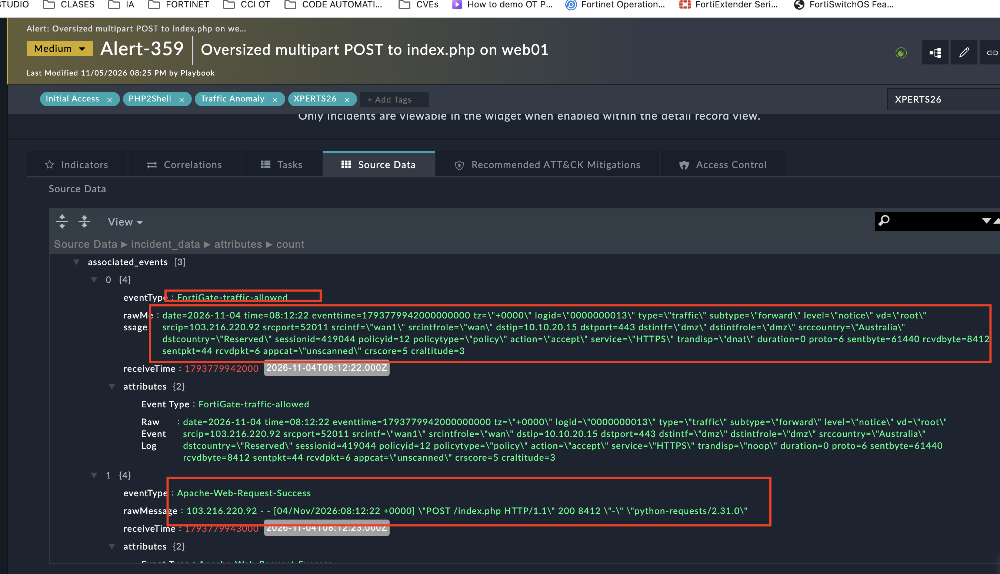
En el FortiGate:
action="accept" + service="HTTPS" + trandisp="dnat" → la política lo dejó pasar: el firewall tradujo el destino (DNAT) desde la VIP 203.0.113.45 hacia el servidor real 10.10.20.15. appcat="unscanned" → nadie miró dentro. Tamaño: sentbyte=61440 ≈ 60 KB.
A nivel de apache:
"POST /index.php" 200 8412 con python-requests/2.31.0 → PHP aceptó y respondió; el User-Agent delata automatización. Misma sesión (sessionid=419044): dos capas, un solo hecho.

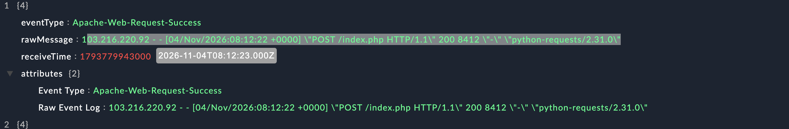
Abre la alerta PHP-FPM memory exhaustion:

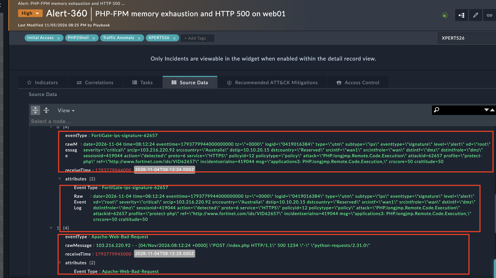
FortiGate IPS: detecta un intento de explotación de PHP2Shell mediante la firma FortiGuard 62657. Como está configurado en modo detección (action="detected"), no bloquea el tráfico.
Apache: registra una petición POST /index.php procedente de la misma IP atacante. El servidor devuelve un HTTP 500, indicando un error interno durante el procesamiento.
PHP: registra un error fatal por agotamiento del límite de memoria de 256 MiB, compatible con el mecanismo de explotación investigado.
FortiGate IPS: detecta otro patrón asociado a la segunda vulnerabilidad (firma 62658), también con action="detected".

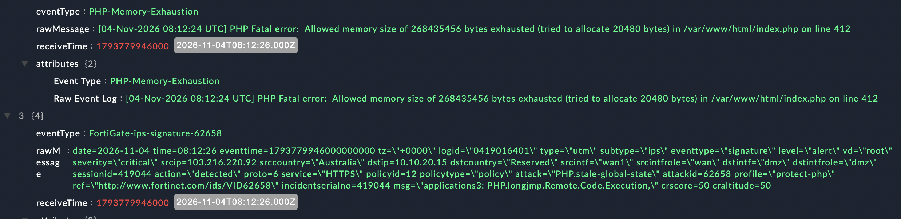
Quédate con el ID sesión de la segunda alerta, relativo al motor de IPS. 419044
Abre el caso que han generado esas dos alertas, desde Cases: PHP Remote Code Execution Attempt on web01.pagos.xperts26.com

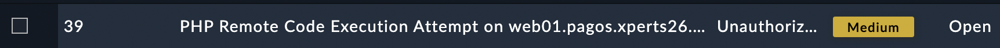
En el caso vete a la sección timeline:

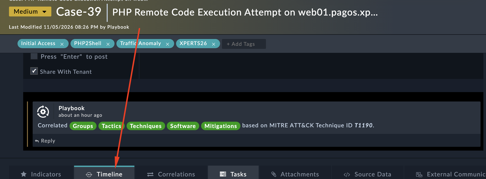
Y revisa las alertas que lo componen:

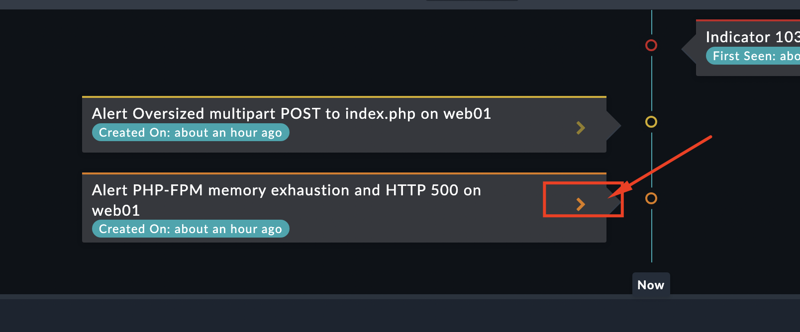
En el mismo caso, más abajo comprueba el mapeo de ambas alertas sobre la matrix MITRE:

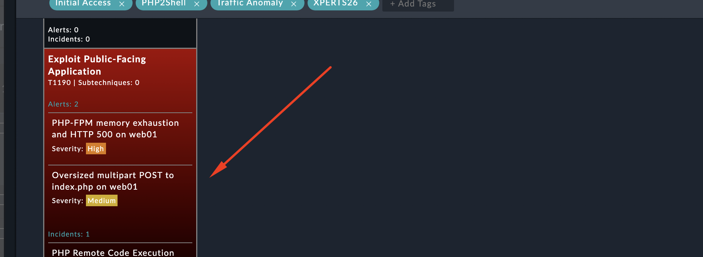
Si haces drill down sobre la primera alerta: “Oversized multipart POST”:

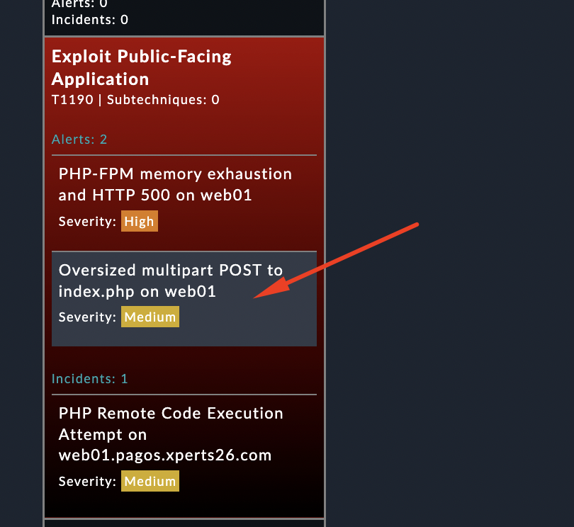
Y en la alerta bajas al source-data, se ve el accept de la sesión del tráfico aceptado por el firewall en el que el ID coincide con el ID de los posteriores eventos de IPS:

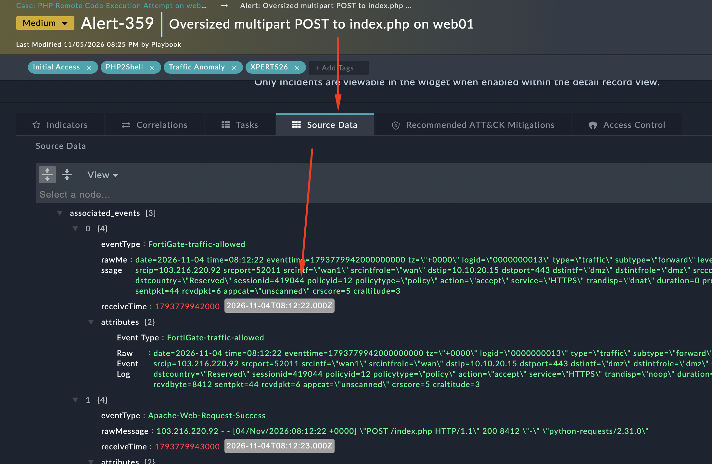
Revisa que todo esto, se ofrece en el insights de AI del caso:

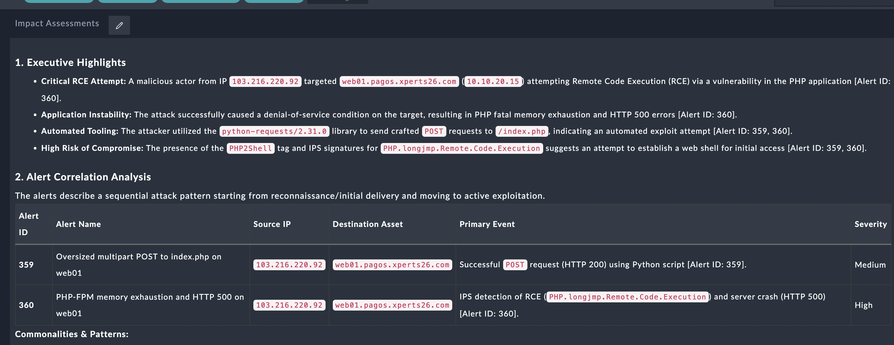
Si tienes dudas abre FortiAI y lanza la pregunta:

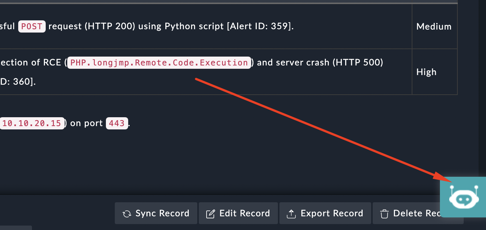
Preguntas de control
Las preguntas de control de esta tarea están publicadas en la web oficial de la competición XPERTS26. Entra con tu equipo para responderlas y validar el progreso del laboratorio.
👉 Accede a la plataforma de la competición para enviar tus respuestas.